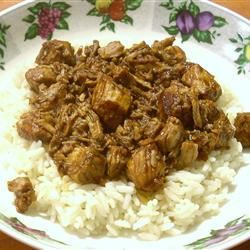

Filipino Pork Adobo Recipe
Home

Description
Filipino Pork Adobo is a dish best served over white jasmine rice. It's made with ingredients like
vinegar, soy sauce, ketchup, garlic, bay leaves, and pork, and can optionally include green beans.
The pork is simmered in a flavorful sauce until tender.
Ingredients
- 1 cup distilled white vinegar
- 1 cup soy sauce
- ½ cup ketchup
- 1 tablespoon minced garlic
- 3 bay leaves
- 1 teaspoon fresh-ground black pepper
- 2 ½ pounds lean pork, cut into 1 inch cubes
- 1 pound small green beans, trimmed (Optional)
Steps
- Stir together the vinegar, soy sauce, ketchup, garlic, and bay leaves in a large saucepan.
- Add the cubed pork, and bring to a boil over high heat.
- Reduce heat to medium-low, cover, and simmer until the pork is tender, about 2 1/2 hours. Stir occasionally.
- If using the green beans, add them during the last half hour of cooking.